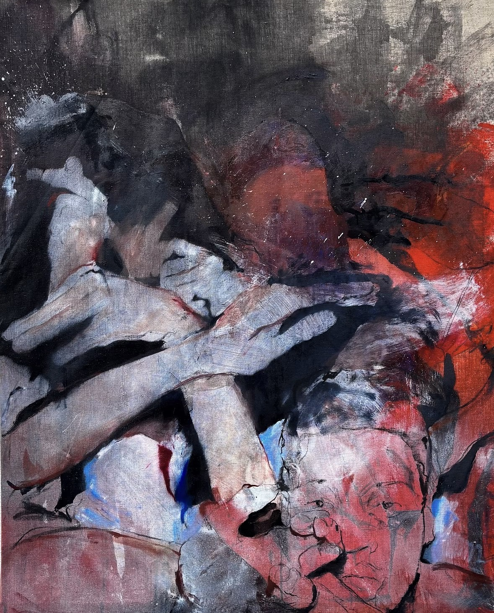
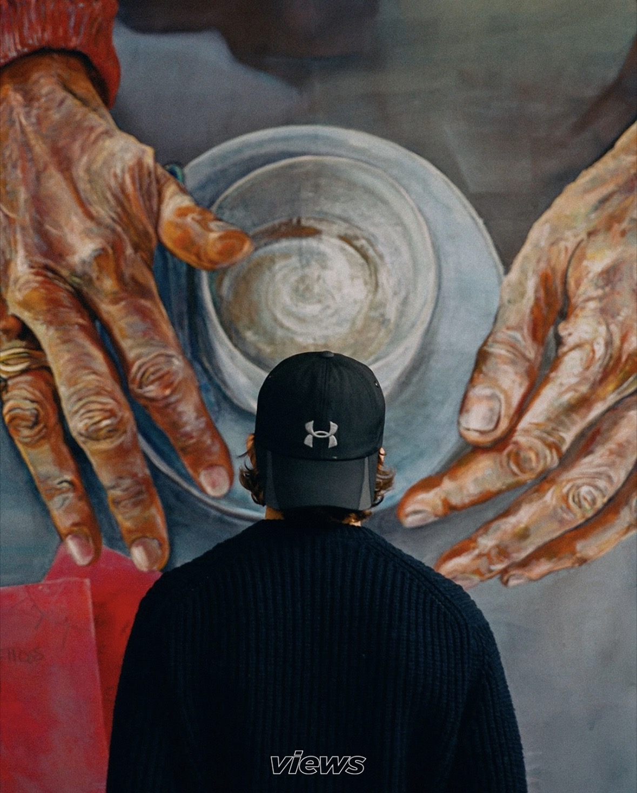
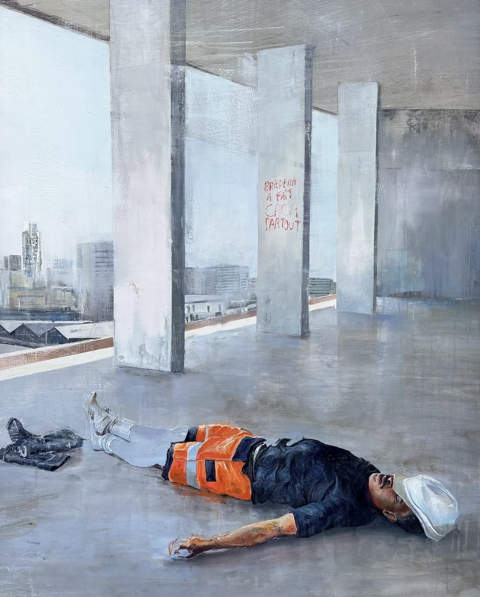
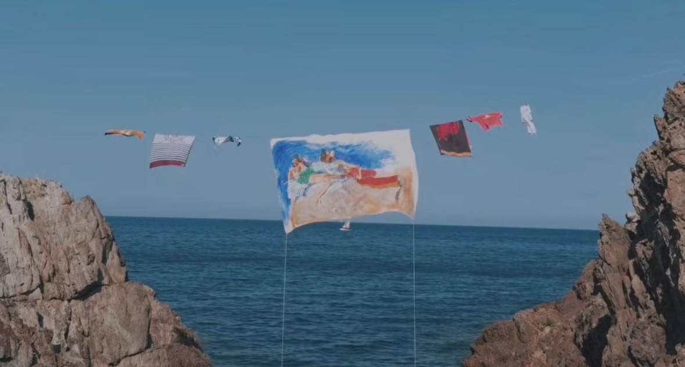

LA DEUXIÈME ÉTOILE
TOILE• Paris, en rue · 2026
Huile sur toile — format libre
Une victoire qui sonne le tocsin de la délibération parisienne
Des murs qui parlent. Des gestes qui restent. Un regard sur les formes d'art qui font vibrer la ville.
artemile._ explore la rue comme une galerie ouverte : spontanée, collective et toujours en mouvement.
Explorer la galerie ↓Six regards sur la ville. Une sélection conceptuelle, à découvrir bientôt en images.

• Paris, en rue · 2026
Huile sur toile — format libre
Une victoire qui sonne le tocsin de la délibération parisienne

Photo libre · Starsbourg, dans l'atelier · 2026
Photo
Un hommage aux présences anonymes qui donnent à la ville son mouvement quotidien.


Peinture sauvage, Paris, exposition dans un chantier
Huile sur toile 211x151cm
Des récits superposés, entre mémoire du lieu et histoires à inventer.

Paris, 19ème
Crayon, frites, stylo, sauce algérienne sur plateau
Quand la nourriture à un goût d'art

Collectif Intervalle - Saint-Denis, canal · 2026
Fresque sur toile
Une fresque commune à l'image de la simplicité du paysage marin.
L'art urbain se partage, se transforme et nous rassemble. Cette galerie est un point de départ, pas un point final.
Recevez notre newsletter pour suivre les nouvelles œuvres, les sorties et les rencontres.